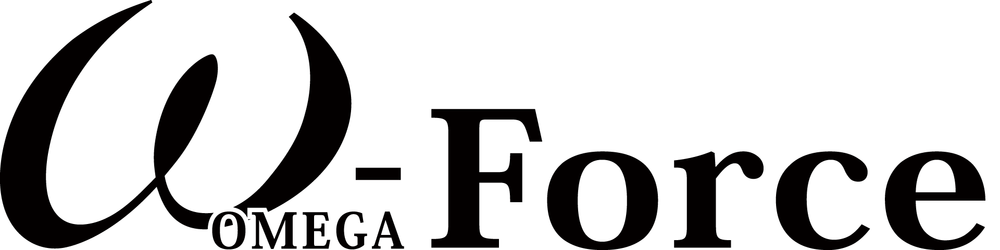
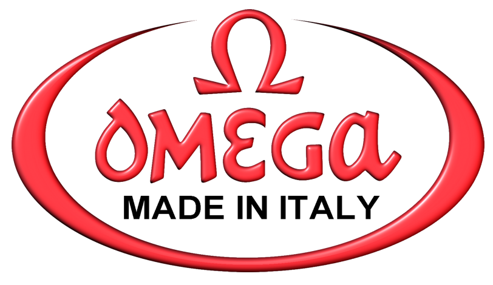

오메가 OMEGA
오메가(OMEGA)는 스위스 스와치 그룹 산하의 럭셔리 시계 제조 브랜드이다.
최종 업데이트
오메가는 어떤 브랜드인가
오메가(OMEGA)는 1848년 루이 브랜트(Louis Brandt)가 스위스 라쇼드퐁에서 키와인드 회중시계 공방을 열며 출발한 시계 브랜드다. 1894년 두 아들 루이폴과 세자르가 완성한 19리뉴 무브먼트에 붙인 이름 '오메가'가 브랜드명의 기원이 됐고, 1903년 오메가 워치 컴퍼니로 사명을 바꿨다.
현재는 스위스 비엘에 본사를 둔 스와치그룹(Swatch Group) 산하 핵심 브랜드로, 그룹 시계·주얼리 사업의 약 3분의 1을 책임지는 간판으로 꼽힌다.
오메가는 어떻게 봐야 할까
오메가를 읽는 첫 열쇠는 롤렉스와의 차별화다. 2024년 시계 시장에서 롤렉스가 점유율 약 32%로 압도하고 오메가는 약 7% 안팎, 순위는 5위권으로 밀렸지만, 오메가는 '기록 경기의 시계'라는 정체성으로 맞선다.
1932년부터 올림픽 공식 타임키퍼를 맡아 파리 2024가 31번째였고 계약은 브리즈번 2032까지 이어진다. 1969년 아폴로 11호와 함께 달에 도달한 스피드마스터는 NASA 공인 '문워치'로 자리잡았고, 1995년 골든아이부터 제임스 본드의 손목에 씨마스터가 올랐다.
2022년 자매사 스와치와 합작한 바이오세라믹 '문스와치'는 약 260달러로 진입 문턱을 낮춰 신규 고객층을 끌어들인 것이 핵심 함의다. 한국에서도 백화점 정식 유통과 중고 시장 양쪽에서 수요가 탄탄하게 유지된다.
오메가는 어떻게 시작되고 성장했나
1848년 라쇼드퐁에서 루이 브랜트는 부품을 모아 키와인드 정밀 회중시계를 조립해, 영국을 거점으로 이탈리아부터 스칸디나비아까지 팔았다. 1877년 두 아들 루이폴(Louis-Paul)과 세자르(César)가 합류하며 사명을 '루이 브랜트 에 피스'로 바꿨고, 생산 거점을 비엘로 옮겨 부품이 호환되는 일관 생산 체계를 세웠다.
1894년 형제는 정밀도와 수리 편의성을 갖춘 19리뉴 칼리버를 내놨는데, 여기에 붙인 이름 '오메가'가 큰 성공을 거두며 1903년 회사명 자체가 오메가 워치 컴퍼니로 바뀌었다. 1969년 아폴로 11호 달 착륙에서 스피드마스터가 NASA 검증 장비로 채택되며 브랜드 위상이 굳어졌고, 이후 스와치그룹 체제에 편입돼 오늘에 이르렀다.
오메가의 브랜드 아이덴티티는 무엇인가
오메가의 가치관은 '정밀함과 개척'으로 압축된다. 우주, 심해, 올림픽 트랙처럼 한계 조건에서 검증된 시계라는 자부가 정체성의 축이다.
브랜드 심볼은 그리스 문자의 마지막 글자 오메가로, '완성'과 정점을 함의한다. 타깃은 헤리티지와 성취 서사에 공감하는 30~50대 전문직과 성취 지향 소비자이며, 롤렉스 대비 상대적으로 접근 가능한 가격대로 '입문 럭셔리' 수요를 겨냥한다.
보이스는 과장보다 사실과 기록에 기댄 절제된 자신감으로, 문워치·올림픽·본드라는 검증된 이야기를 거듭 들려주며 신뢰를 쌓는다.
오메가의 대표 제품과 서비스는 무엇인가
대표 라인은 1957년 시작된 크로노그래프 스피드마스터, 다이버 워치 씨마스터, 정장용 콘스텔레이션, 클래식 드빌로 나뉜다. 한국 정식 유통가 기준 씨마스터는 약 1천만 원대, 스피드마스터 문워치 프로페셔널은 약 1,100만 원대에 형성돼 있고, 보급형 문스와치는 약 260달러대다.
백화점 부티크와 공식 온라인몰, 정식 리테일러를 통해 유통된다.
오메가는 지금 어떤 상태인가
모회사는 스위스 비엘에 본사를 둔 스와치그룹이며, 오메가는 그룹 내 매출 비중이 가장 큰 핵심 브랜드다. 오메가 단독 매출은 2024년 기준 약 22억 스위스프랑 수준으로 추정되며(공식 분리 수치는 미공개), 시장 추정 기준 그룹 시계·주얼리 매출의 약 35%를 차지한다.
본사 비엘에는 박물관이 들어선 '시테 뒤 탕'과 2017년 준공된 신생산동이 자리한다.
오메가 연혁 — 주요 사건은 언제였나
오메가 로고는 어떻게 변해왔나

BI/CI 아카이브 2보관 이미지 2
BI/CI 아카이브 3보관 이미지 3자주 묻는 질문
오메가는 어느 나라 브랜드인가요?
오메가는 스위스의 패션·럭셔리 브랜드입니다.
오메가는 언제 설립되었나요?
오메가는 1848년 설립되었습니다.
오메가의 브랜드 아이덴티티는 무엇인가요?
오메가의 가치관은 '정밀함과 개척'으로 압축된다.
오메가의 대표 제품은 무엇인가요?
대표 라인은 1957년 시작된 크로노그래프 스피드마스터, 다이버 워치 씨마스터, 정장용 콘스텔레이션, 클래식 드빌로 나뉜다.
오메가는 현재 어떤 상태인가요?
모회사는 스위스 비엘에 본사를 둔 스와치그룹이며, 오메가는 그룹 내 매출 비중이 가장 큰 핵심 브랜드다.
오메가의 본사는 어디에 있나요?
오메가의 본사는 빌/비엔에 있습니다(위키데이터 기준).
오메가의 모기업은 어디인가요?
오메가의 모기업은 스와치 그룹입니다(위키데이터 기준).
출처와 검증
오메가 관련 참고: 공식 웹사이트 · 위키데이터 Q659224 · 한국어 위키백과 · 영어 위키백과. 브랜드명은 한글과 원어를 함께 표기하되 데이터에 없는 표기는 만들지 않습니다. 기원 국가·설립연도는 검수된 정의문에서 확인된 값을 우선하고, 없을 때만 공식 웹사이트 URL이 일치하는 위키데이터 개체의 값을 씁니다. 위키데이터 값은 2026-09-07 기준입니다.